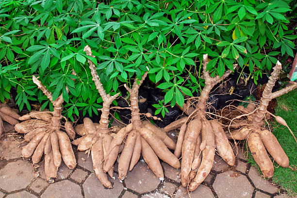
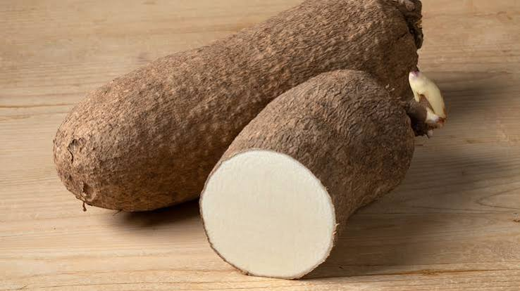
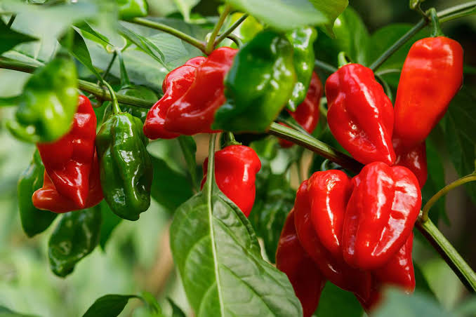
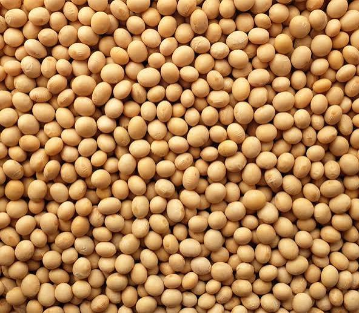
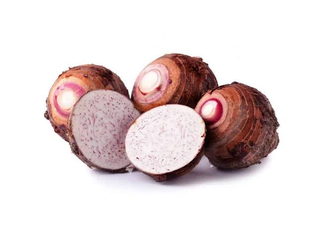
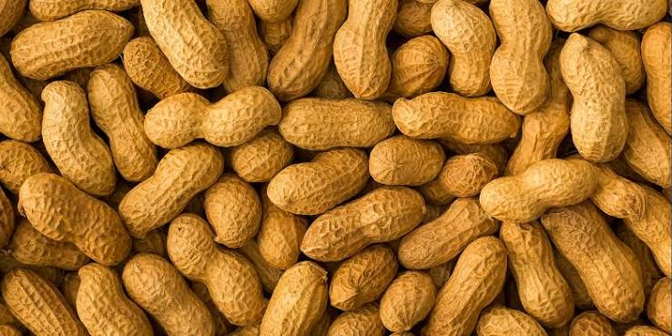
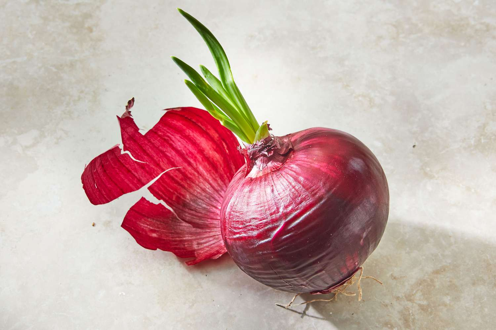
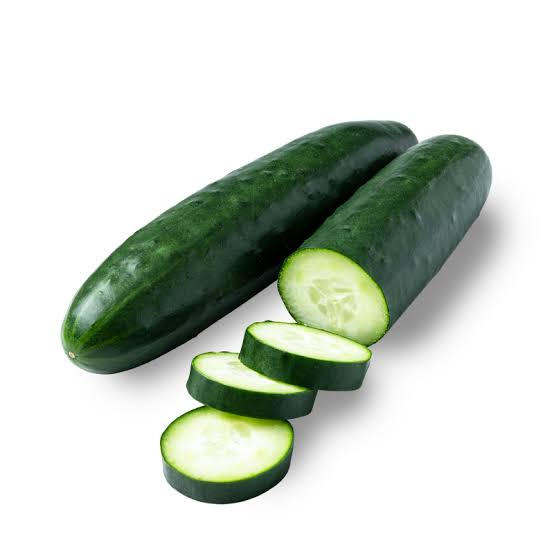
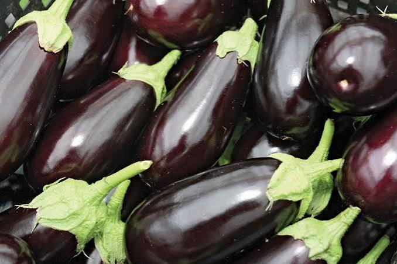

Comprehensive step-by-step guides for planting and managing your crops successfully.

Maize is one of the most important staple crops worldwide. Proper planting techniques ensure high yields and quality grain production.
Start with soil testing to determine nutrient levels and pH. Clear the land of weeds and debris, then plough and harrow to create a fine seedbed. Proper tillage improves root penetration and water infiltration.
Choose high-yielding, disease-resistant varieties suited to your region. Plant at the right depth (3-5 cm) and spacing (75 cm between rows, 25 cm within rows) for optimal growth. Plant at the onset of the rainy season.
Apply NPK 20-10-10 at planting (200-300 kg/ha). Side-dress with nitrogen fertilizer (urea) 4-6 weeks after planting and again at tasseling stage for maximum yield.
Maize requires about 500-800 mm of water per season. Provide supplemental irrigation during dry spells, especially during flowering and grain filling stages.
Control weeds through timely cultivation and herbicide application. Monitor for pests like armyworms, stalk borers, and fall armyworms. Use integrated pest management strategies.
Harvest when kernels are dry and moisture content is below 14%. Dry properly, shell, and store in clean, pest-proof containers to prevent losses.

Rice is a staple food for billions. Successful rice cultivation requires careful water management and proper nursery preparation.
Plough and puddle the field to create a level surface. Ensure proper water retention by bunding. A well-prepared field reduces water loss and supports uniform crop establishment.
Select high-yielding, disease-tolerant varieties. Use the nursery method for transplanting or direct seeding. For transplanting, use 20-25 day old seedlings with 2-3 seedlings per hill at 20x20 cm spacing.
Apply NPK 20-10-10 at 200-250 kg/ha at transplanting. Apply nitrogen in split applications: at tillering, panicle initiation, and heading stages.
Maintain 5-10 cm of standing water during the vegetative stage. Allow field to dry slightly during tillering and flowering. Practice alternate wetting and drying for water conservation.
Control weeds through flooding and manual removal. Monitor for rice blast, leaf blight, and pests like stem borers and leafhoppers. Use resistant varieties and timely pesticide application when needed.
Harvest when 80-85% of grains are straw-colored and moisture is 20-25%. Thresh, dry to 12-14% moisture, and store in clean, dry conditions to maintain quality.

Cassava is a drought-tolerant root crop that thrives in tropical conditions. Proper land preparation and planting techniques are key to high yields.
Clear the land thoroughly and plough to a depth of 25-30 cm. Ridging or mounding improves root development and reduces waterlogging. Apply organic manure during land preparation.
Use healthy, disease-free stem cuttings (25-30 cm long) from mature plants. Plant at 60-75 degree angle, 1 m between rows and 0.8-1 m within rows for optimal growth.
Apply NPK 15-15-15 at 200-300 kg/ha at planting. Supplement with organic manure to improve soil structure and nutrient availability for better root development.
Cassava is drought-tolerant but benefits from irrigation during early establishment. Water during dry spells to ensure good root development and prevent cracking.
Control weeds during the first 3 months. Monitor for cassava mosaic disease, mealybugs, and whiteflies. Use resistant varieties and integrated pest management approaches.
Harvest 8-12 months after planting when roots are mature. Process immediately or within 48 hours to prevent post-harvest deterioration.

Tomatoes are high-value crops with excellent market potential. Successful production requires careful nursery management and pest control.
Prepare well-drained, fertile soil with pH 6.0-7.0. Plough and harrow to create a fine tilth. Add organic manure and form raised beds or ridges for better drainage.
Select high-yielding, disease-resistant varieties. Start seeds in nursery beds or trays. Transplant 4-6 week old seedlings at 60x60 cm spacing for optimum fruit production.
Apply NPK 15-15-15 at 300-400 kg/ha at transplanting. Side-dress with nitrogen and potassium during flowering and fruit setting stages for better fruit development.
Maintain consistent moisture throughout the growing season. Water regularly using drip irrigation to prevent blossom end rot and fruit cracking.
Control weeds with mulching and timely hoeing. Monitor for Tuta absoluta, aphids, and blight. Use IPM strategies including biological control and approved pesticides.
Harvest at proper maturity stage (breaker stage for marketing). Handle gently to prevent bruising. Sort, grade, and pack in ventilated containers for market.

Yam is a highly valued tuber crop that requires proper land preparation and care. It thrives in tropical climates with well-drained soils.
Clear the land and make mounds or ridges 1 m apart. Apply organic manure during preparation. Ensure proper drainage to prevent tuber rot and fungal diseases.
Use healthy, disease-free setts (small tubers or cut pieces). Treat cut surfaces with wood ash to prevent rot. Plant at 1x1 m spacing, 10-15 cm deep with the eye facing upward.
Apply NPK 15-15-15 at 200-300 kg/ha at planting. Supplement with organic manure during the growing season for better tuber development.
Water regularly during the first 3 months. Reduce watering during the dry season as the plant matures. Provide supplemental irrigation during extended dry periods.
Control weeds through regular weeding and mounding. Monitor for yam nematodes, beetles, and fungal diseases. Use crop rotation and resistant varieties.
Harvest when the leaves turn yellow and die back (8-10 months). Handle carefully to prevent bruising. Store in cool, dry, well-ventilated conditions.

Pepper is a profitable cash crop with high demand. It requires careful nursery management and proper field establishment.
Prepare well-drained, fertile soil with pH 5.5-6.5. Plough and harrow to create a fine seedbed. Add organic manure and form raised beds for better drainage.
Select high-yielding, disease-resistant varieties. Start seeds in nursery beds or trays. Transplant 4-6 week old seedlings at 50x50 cm spacing for optimum fruit production.
Apply NPK 15-15-15 at 200-300 kg/ha at transplanting. Side-dress with nitrogen and potassium during flowering and fruit setting stages for better fruit development.
Maintain consistent moisture throughout the growing season. Drip irrigation is recommended for optimal growth and fruit quality.
Control weeds with mulching and timely hoeing. Monitor for aphids, thrips, and diseases like bacterial wilt. Use IPM strategies.
Harvest when fruits reach the desired color and size. Handle gently to prevent bruising. Sort, grade, and pack for market.

Soybeans are a valuable legume crop that fixes nitrogen in the soil. Proper planting techniques ensure high yields and quality beans.
Prepare a fine seedbed with proper drainage. Soybeans prefer well-drained, loamy soil with pH 6.0-7.0. Apply lime if soil is too acidic.
Choose high-yielding, disease-resistant varieties. Plant at 2-3 cm depth with 50 cm between rows and 5-10 cm within rows for optimal growth.
Apply NPK 15-15-15 at 150-200 kg/ha at planting. Inoculate seeds with rhizobium bacteria for nitrogen fixation and reduced fertilizer needs.
Water during the flowering and pod filling stages. Avoid waterlogging as soybeans are sensitive to excess moisture.
Control weeds with timely cultivation and herbicide application. Monitor for aphids, caterpillars, and diseases like rust and bacterial blight.
Harvest when pods are dry and moisture content is below 14%. Dry, thresh, and store in clean, dry conditions to maintain quality.

Cocoyam is a nutritious root crop that thrives in tropical conditions. It requires proper land preparation and care for high yields.
Prepare well-drained, fertile soil with plenty of organic matter. Plough and harrow to create a fine seedbed. Form ridges or mounds for better drainage.
Use healthy, disease-free corms or cormels. Plant at 1x0.5 m spacing with the growing tip facing upward at 5-10 cm depth.
Apply NPK 15-15-15 at 200-250 kg/ha at planting. Supplement with organic manure to improve soil structure and nutrient availability.
Water regularly during the growing season. Reduce watering as the plant matures to prevent tuber rot.
Control weeds with regular weeding and mulching. Monitor for nematodes, aphids, and diseases like root rot. Use resistant varieties.
Harvest 8-10 months after planting when leaves turn yellow. Handle carefully to prevent bruising. Store in cool, dry conditions.

Groundnuts are valuable oilseeds that also fix nitrogen in the soil. They require well-drained soils and proper management.
Prepare a fine seedbed with proper drainage. Groundnuts prefer well-drained, sandy loam soil with pH 5.5-7.0. Apply lime if soil is too acidic.
Choose high-yielding, disease-resistant varieties. Plant at 3-5 cm depth with 50 cm between rows and 15 cm within rows for optimal growth.
Apply NPK 15-15-15 at 150-200 kg/ha at planting. Supplement with calcium at pegging stage for better pod formation.
Water during flowering and pegging stages. Avoid overwatering as groundnuts are sensitive to excess moisture.
Control weeds through timely cultivation and herbicide application. Monitor for aphids, thrips, and diseases like leaf spot and rust.
Harvest when pods are mature and leaves turn yellow. Dry properly, shell, and store in clean, dry conditions to prevent aflatoxin contamination.

Onions are essential vegetables with high market demand. They require careful nursery management and proper field practices.
Prepare well-drained, fertile soil with pH 6.0-7.0. Plough and harrow to create a fine seedbed. Add organic manure and form raised beds for better drainage.
Select high-yielding, disease-resistant varieties. Start seeds in nursery beds. Transplant 6-8 week old seedlings at 20x15 cm spacing for optimum bulb production.
Apply NPK 15-15-15 at 200-250 kg/ha at transplanting. Side-dress with nitrogen and potassium during bulb formation stages.
Maintain consistent moisture during bulb formation. Reduce watering as the crop matures to prevent bulb rot.
Control weeds with mulching and timely hoeing. Monitor for thrips, onion flies, and diseases like downy mildew and white rot.
Harvest when leaves fall over and start drying. Dry and cure bulbs before storage. Store in cool, dry, well-ventilated conditions.

Cucumbers are fast-growing vegetables with excellent market potential. They require proper trellising and irrigation.
Prepare well-drained, fertile soil with pH 6.0-7.0. Plough and harrow to create a fine seedbed. Add organic manure and form raised beds for better drainage.
Select high-yielding, disease-resistant varieties. Plant seeds directly at 60x30 cm spacing. Use trellising for better fruit quality and reduced disease.
Apply NPK 15-15-15 at 200-250 kg/ha at planting. Side-dress with nitrogen and potassium during flowering and fruit setting stages.
Maintain consistent moisture for continuous fruit production. Drip irrigation is recommended for optimal growth and fruit quality.
Control weeds with mulching and timely hoeing. Monitor for aphids, cucumber beetles, and diseases like powdery mildew and downy mildew.
Harvest when fruits reach the desired size. Handle gently to prevent bruising. Sort, grade, and pack for market.

Eggplant is a warm-season vegetable with good market demand. It requires proper nursery management and field care.
Prepare well-drained, fertile soil with pH 5.5-6.5. Plough and harrow to create a fine seedbed. Add organic manure and form raised beds for better drainage.
Select high-yielding, disease-resistant varieties. Start seeds in nursery beds or trays. Transplant 4-6 week old seedlings at 60x60 cm spacing.
Apply NPK 15-15-15 at 200-300 kg/ha at transplanting. Side-dress with nitrogen and potassium during flowering and fruit setting stages.
Maintain consistent moisture throughout the growing season. Drip irrigation is recommended for optimal growth and fruit quality.
Control weeds with mulching and timely hoeing. Monitor for aphids, flea beetles, and diseases like bacterial wilt and verticillium wilt.
Harvest when fruits reach the desired size and color. Handle gently to prevent bruising. Sort, grade, and pack for market.
Have questions about crop production or need personalized farming guidance? The team at AFOD VENTURES is here to help you make informed decisions for healthier crops and better harvests. Get in touch with us today and let's grow your farming success together.
Contact Us Today